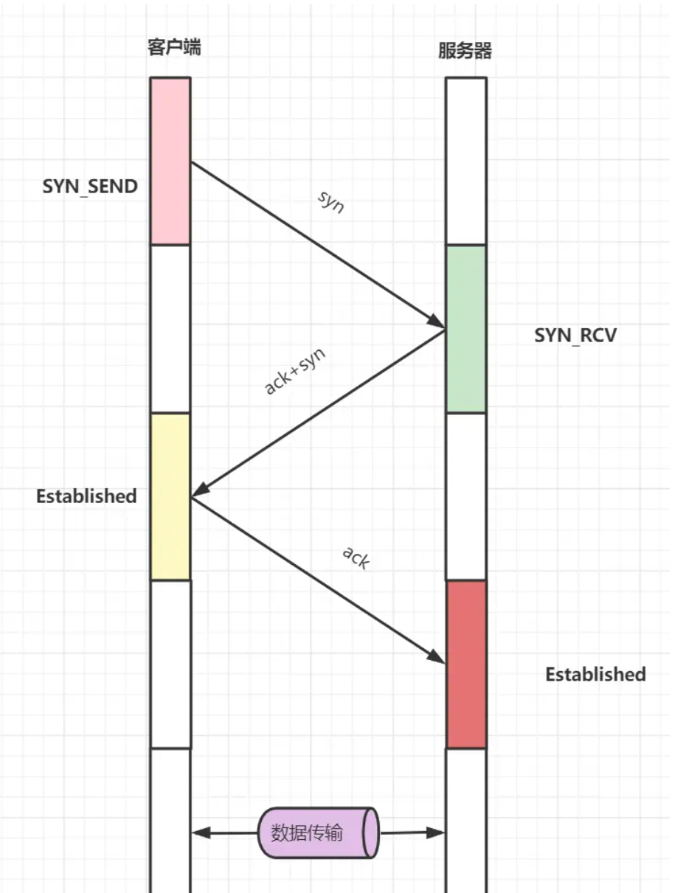
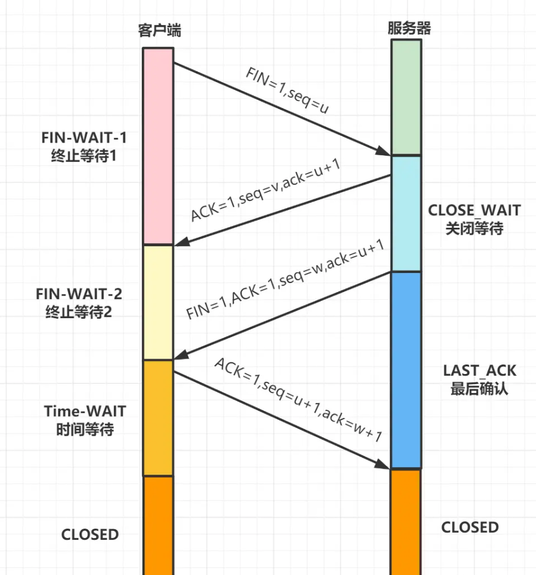
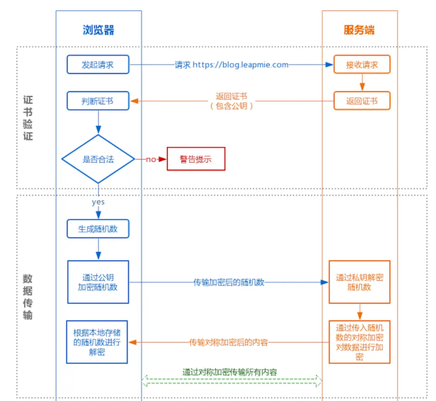

<!doctype html>
<html lang="en">

	<head>
		<meta charset="utf-8">

		<title>W1 HTTP介绍</title>

		<link rel="stylesheet" href="../dist/reveal.css">
		<link rel="stylesheet" href="../dist/theme/white.css" id="theme">

        <link rel="stylesheet" href="../plugin/highlight/monokai.css">
	</head>

	<body>

		<div class="reveal">

			<div class="slides">


                <section data-markdown data-background-color="lightblue">
                    <script type="text/template">
                        # W1 HTTP介绍

                        Vinko Fun

                        2022-04-20
                    </script>
                </section>

                <section data-markdown data-separator="^\n---\n$" data-separator-vertical="^\n--\n$" data-background-color="lightblue">
                    <script type="text/template">
                        ## IP

                        --

                        ### IPv4 vs IPv6

                        **地址格式区别**

                        IPv4地址长度为32位，IPv6地址长度为128位

                        --

                        

                        --

                        

                        --

                        Attention！

                        **_本机地址:127.0.0.1_**
                    </script>
                </section>

                <section data-markdown data-separator="^\n---\n$" data-separator-vertical="^\n--\n$" data-background-color="lightblue">
                    <script type="text/template">
                        ## Port

                        --

                        常用端口

                        - 21:FTP    <!-- .element: class="fragment" data-fragment-index="1" -->
                        - 22:SSH    <!-- .element: class="fragment" data-fragment-index="2" -->
                        - 80:HTTP   <!-- .element: class="fragment" data-fragment-index="3" -->
                        - 443:HTTPS <!-- .element: class="fragment" data-fragment-index="4" -->
                        - 3306:MySQL    <!-- .element: class="fragment" data-fragment-index="5" -->
                    </script>
                </section>

                <section data-markdown data-separator="^\n---\n$" data-separator-vertical="^\n--\n$" data-background-color="lightblue">
                    <script type="text/template">
                        ## TCP

                        --

                        ### 三次握手


                        --

                        

                        --

                        ### 四次挥手

                        --

                        

                        --

                        ### TCP和UDP区别
                        
                        1. 可靠性   <!-- .element: class="fragment" data-fragment-index="1" -->
                            - 丢包处理  <!-- .element: class="fragment" data-fragment-index="2" -->
                            - 数据有序性  <!-- .element: class="fragment" data-fragment-index="3" -->
                            - 可靠的连接   <!-- .element: class="fragment" data-fragment-index="4" -->
                            - ......    <!-- .element: class="fragment" data-fragment-index="5" -->
                        2. 效率 <!-- .element: class="fragment" data-fragment-index="6" -->
                            - UDP高 <!-- .element: class="fragment" data-fragment-index="7" -->

                        --

                        ### TCP如何保证可靠性

                        - 可靠连接：三次握手、四次挥手          <!-- .element: class="fragment" data-fragment-index="1" -->
                        - 有状态：记录哪些数据发送被正确接收了      <!-- .element: class="fragment" data-fragment-index="2" -->
                        - 完整性：服务端超时重传，失序数据重传，快速重传；接收端丢弃重复数据    <!-- .element: class="fragment" data-fragment-index="3" -->
                    </script>
                </section>

                <section data-markdown data-separator="^\n---\n$" data-separator-vertical="^\n--\n$" data-background-color="lightblue">
                    <script type="text/template">
                        ## HTTP

                        ---

                        ### 版本

                        --

                        #### HTTP 1.0

                        - 连接无法复用，慢启动对性能有较大影响  <!-- .element: class="fragment" data-fragment-index="1" -->

                        - 队头堵塞  <!-- .element: class="fragment" data-fragment-index="2" -->

                            前一个请求的响应还没有到达，则下一个请求不能发出    <!-- .element: class="fragment" data-fragment-index="2" -->
                        
                        --

                        #### HTTP 1.1

                        --

                        `curl -I http://www.baidu.com`

                        --

                        - 长连接 <!-- .element: class="fragment" data-fragment-index="1" -->

                            增加<!-- .element: class="fragment" data-fragment-index="1" -->
                            `Connnection`<!-- .element: class="fragment" data-fragment-index="1" -->
                            字段，默认设置<!-- .element: class="fragment" data-fragment-index="1" -->
                            `Keep-alive` <!-- .element: class="fragment" data-fragment-index="1" -->

                            ：一个含有许多图片链接的网页，可以复用连接，而不用对每张图片的请求重新建立连接 <!-- .element: class="fragment" data-fragment-index="1" -->

                        - 缓存处理 <!-- .element: class="fragment" data-fragment-index="2" -->

                            增加<!-- .element: class="fragment" data-fragment-index="2" -->
                            `cache-control`<!-- .element: class="fragment" data-fragment-index="2" -->
                            实现断点传输 <!-- .element: class="fragment" data-fragment-index="2" -->

                        --

                        - 支持并行发送请求

                            客户端可以不等待前一个请求返回，直接发送下一个请求；但服务器返回响应仍需要有序，保证前一个响应传输完才能传输下一个。

                        --

                            

                            服务器将资源分布在多个域名下，chrome允许建立多个TCP连接，实现并行下载

                        --

                        #### HTTP 2.0

                        --

                        `curl -I https://developer.mozilla.org/zh-CN/docs/Web/HTTP/Basics_of_HTTP/Evolution_of_HTTP`

                        --

                        - 二进制分帧

                            基于二进制流的数据传输
                        
                        --

                        - 多路复用

                            同域名下的通信复用一个TCP连接

                            一个TCP连接可以有多组双向数据流，协议上实现真正的并行。

                            数据流切分后的帧可以乱序发送，最后根据流标识组装。

                        --

                        - 服务器推送

                            主动推送css、js等资源文件

                            遵循同源策略

                        --

                        - 头部压缩

                            对于头部数据大、重复发送且不带实际数据的，如`cookie`

                            双方缓存`header fields`表，减少重复的`header`

                        - **......**

                        ---

                        ### 请求方法

                        - GET
                        - POST
                        - PUT
                        - DELETE
                        - OPTIONS

                        ---

                        ### 状态码

                        --

                        #### Nginx 服务常见

                        - 1xx：需要客户端进行进一步的动作
                        - 2xx：成功
                        - 3xx：重定向
                        - 4xx：客户端错误
                        - 5xx：服务器错误

                        --

                        #### 后端api常用

                        - 200：ok
                        - 401：unauthorized
                        - 500：internal server error

                    </script>
                </section>

                <section data-markdown data-separator="^\n---\n$" data-separator-vertical="^\n--\n$" data-background-color="lightblue">
                    <script type="text/template">
                        ## HTTPS

                        --

                        ### 中间人攻击（Man-in-the-middle attack）

                        --

                        ### 加密

                        不可逆加密：MD5，SHA1,SHA-256,SHA-384


                        可逆加密

                        --

                        对称加密：DES,3DES,**AES128,AES192,AES256**


                        非对称加密：**RSA**，ECC
                        
                        --

                        ### 通信过程

                        
                    </script>
                </section>


                <section data-markdown data-separator="^\n---\n$" data-separator-vertical="^\n--\n$" data-background-color="lightblue">
                    <script type="text/template">
                        Thank You！
                    </script>
                </section>


            </div>
		</div>

		<script src="../dist/reveal.js"></script>
        <script src="../plugin/markdown/markdown.js"></script>
        <script src="../plugin/highlight/highlight.js"></script>
        <script src="../plugin/notes/notes.js"></script>
        <script src="../plugin/math/math.js"></script>

		<script>

			Reveal.initialize({
				controls: true,
				progress: true,
				history: true,
				center: true,

				plugins: [ RevealMarkdown, RevealHighlight, RevealNotes, RevealMath.KaTeX ]
			});

		</script>

	</body>
</html>
